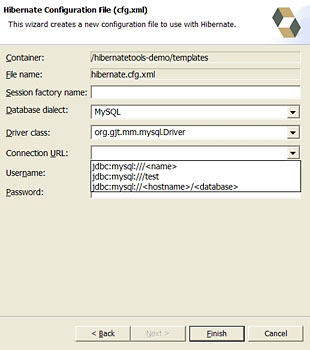

Please note that this release is a preview release and considered alpha quality. The presented functionality (reverse engineering, code generation, etc.) is also be available outside of Eclipse, ie. as Ant tasks. See the Hibernate Tools website for more information about the road map.
We have made significant improvements to the Hibernate toolset for Hibernate3. This is however work in progress and we'll continue to implement new ideas and features as the third generation of the Hibernate3 object persistence stack evolves.
The first set of tools we offer are plugins for the Eclipse IDE. The following features are available:
Mapping Editor: An editor for Hibernate XML mapping files, supporting auto-completion and syntax highlighting. It also supports semantic auto-completion for class names and property/field names, making it much more versatile than a normal XML editor.
Console: The console is a new view in Eclipse. In addition to a tree overview of your console configurations, you also get an interactive view of your persistent classes and their relationships. The console allows you to execute HQL queries against your database and browse the result directly in Eclipse.
Development Wizards: Several wizards are provided with the Hibernate Eclipse tools; you can use a wizard to quickly generate Hibernate configuration (cfg.xml) files, or you may even completely reverse engineer an existing database schema into POJO source files and Hibernate mapping files. The reverse engineering wizard supports customizable templates.
After you have downloaded the Hibernate Tools for Eclipse, unpack and copy the plugins to your Eclipse plugins directory.
Sometimes Eclipse does not automatically detect new plugins and thus the tools will not be activated. To ensure eclipse sees
these changes run eclipse with the -clean option. E.g. eclipse -clean
You will also need JDBC drivers for your database available to use the reverse engineering and querying support.
Please note that these tools do not try to hide any functionality of Hibernate. The tools make working with Hibernate easier, but you are still encouraged/required to read the documentation for Hibernate to fully utilize Hibernate.
To be able to reverse engineer, prototype queries, and of course to simply use Hibernate a hibernate.properties or hibernate.cfg.xml file is needed. The Hibernate Tools provide a wizard for generating the hibernate.cfg.xml file.
Start the wizard by clicking "New Wizard" (Ctrl+N), select the Hibernate/Hibernate Configuration file (cfg.xml) wizard and press "Next". After selecting the location for the hibernate.cfg.xml file, you will see the following page:
Enter your configuration information in this dialog. Details about the configuration options can be found in Hibernate reference documentation. Press "Finish" to create the configuration file, it will be automatically opened in an editor.
Tip: The contents in the combo boxes for the JDBC driver class and JDBC URL change automatically, depending on the Dialect and actual driver you have chosen.
The XML mapping editor provides basic XML editing functionality as well as package, class, and field completion for relevant XML attributes. The auto-completion detects it's context and limits the completion for e.g. <property> and only shows the properties/fields available in the enclosing <class>, <subclass> etc.

The Hibernate Console perspective combines a set of views which allow you to see the structure of your mapped entities/classes, edit HQL queries, execute the queries, and see the results. To use this perspective you need to create a console configuration.
You create a console configuration by running the Console Configuration wizard, shown in the following screenshot:

The following table describes the available settings. The wizard can automatically detect default values.
| Parameter | Description | Autodetect |
|---|---|---|
| Name | The unique name of the configuration | Name of the Java project |
| Property file | Path to a hibernate.properties file/td> | First hibernate.properties file found in the project |
| Configuration file | Path to a hibernate.cfg.xml | First hibernate.cfg.xml found in the project |
| Mapping files | List of additional mapping files that should be loaded. Note: A hibernate.cfg.xml can also contain mappings, avoid duplication. | All hbm.xml files found in the project |
| Classpath | The classpath for loading POJO and JDBC drivers. Don't add Hibernate core libraries or dependencies, they are already included. | The default build output directory and any JARs with a class implementing java.sql.Driver |
Clicking "Finish" creates the configuration and shows it in the Console overview.
To view your new configuration and entity/class structure, right click the configuration in the list and select "Create SessionFactory". This will create a standard Hibernate SessionFactory using your settings.
Clicking on the small + symbol allows you to browse the class/entity structure and see the relationships.
Errors during creation of the SessionFactory (e.g. if your configuration is incorrect) will be shown in a message dialog, you may get more information about the error in the Error Log view on the right pane.

Queries can be executed in two ways: by double clicking on entity names in the tree or by entering HQL in the HQL editor and pressing the green execute button.
Results of a query will be shown in the Query result view and details of possible errors (syntax errors, database errors, etc.) can be seen in the Error Log view.
Tip: HQL queries are executed using list() and without any limit of the size of the output. Be careful if you execute a query on a large result set. You might run out of memory. This will be improved in a future version.
The properties view shows the structure of any selected persistent object in the results view. Editing is not yet supported.
The properties view is still very experimental, thus if you experience issues while having it visible then close it to be able to work with the remaining functionallity
A very simple "click-and-generate" reverse engineering and code generation facility is also available. The reverse engineering internally creates a Hibernate meta model. On this meta-model a set of (velocity) templates are applied, generating a set of artifacts. Currently supported are POJO Java source file, Hibernate *.hbm.xml, and hibernate.cfg.xml generation. To start this process, choose the "Hibernate Artifact Generation Wizard".

First select which Console configuration should be used and the target directory for code and mapping file generation. Note: Generation will generate files, and overwrite possibly existing files in this location.
Now choose from the following list of options:
Reverse engineering will connect to your database and read the JDBC metadata of your database schema. The basic rules for the conversion is that each table/view found is mapped to a POJO class, and each column is mapped to a property. The package name controls the "root" package of the generated classes.
For each found foreign key, a <many-to-one> and a corresponding <one-to-many> mapping, using a Set, will be created.
The flag "Generate 'raw' composite ids" turns on special handling of composite primary keys. A <composite-id> mapping will always be created, and if there are matching foreign-keys, a <key-many-to-one> will be created as well. If you choose to active the 'raw' composite ids, then each composite key column is considered a 'raw' scalar (string, long, etc.) instead of a reference to an entity. Note: a <many-to-one> property is still created, but is simply marked as non-updatable and non-insertable.
The code generation will generate all the persistent classes and components found in the given Hibernate configuration.
You can use the code generation on your own handwritten or reverse-engineered mapping files.This "EJB3/JSR-220 annotations" option will activate usage of the EJB3 sections in the javaclass.vm template. This is considered experimental and currently incomplete. Updates to the template are expected, you can even write (and hopefully contribute) more powerful templates.
The Java code generation is based on a a complete rewrite of the hbm2java found in the Hibernate 2.x toolset. This means that feature-wise they should be equal, but there might be some exotic <meta> features not fully implemented so far. Please report any bugs or missing code generation features via our issue tracking system.
Consult the Hibernate documentation for the various code generation tags you can use in your mapping files.
This creates a hbm.xml for each class declared in the configuration (and their persistent subclasses). Each <subclass> or <joined-subclass> will be written to a separate mapping file, an extends attribute is used.
The mapping file generation feature currently supports only basic generation, completing the reverse engineering functionality. More features will be added in the future.
This option writes a hibernate.cfg.xml with all relevant properties and with a <mapping> reference for each persistent class
All of the generated code is controlled via templates (except the hibernate.cfg.xml). The wizard searches for the templates in the classpath of the plugin, by default.
You can customize templates by placing your own .vm files in a directory and naming the directory in the wizard dialog. You can override existing templates by using the same file names. The built-in templates can be found in the hibernate-tools.jar in the org.hibernate.eclipse plugin directory.
You may use a pre-defined set of variables and properties in templates, as shown in the following table.
| Name | Contents | Availability |
|---|---|---|
| $cfg | The current Hibernate Configuration object. See Hibernate3 javadocs for available properties/methods. | Anywhere |
| $c2h | A Cfg2HbmTool. Contains a set of helper methods related to cfg to hbm conversion. See sourcecode and existing templates for available properties/methods. | Anywhere |
| $c2j | A Cfg2JavaTool. Contains a set of helper methods related to cfg to java conversion. See sourcecode and existing templates for available properties/methods. | Anywhere |
| $clazz | A reference to the current PersistentClass or Component being processed. | In any class related template |
| $property | A reference to the current Property being processed | In any property related template |
Note that some of these properties are only available in a certain context (e.g. $property is not available at the Class level, but only fo rproperties). If you need to look up some information, you have full access to Hibernate's own meta-model, the Configuration via $cfg. This combined with the power of velocity templates should give you virtually unlimited flexibility and possibilities for code generation.
Note that we expect significant changes to the structure and organization of the built-in templates in one of the next releases.
It is possible to configure the eclipse plugin to route all logging made by the plugins and hibernate code it self to the "Error log" view in Eclipse.
This is done by editing the "hibernate-log4j.properties" in org.hibernate.eclipse/ directory/jar. This file includes a default configuration that only logs WARN and above to a set of custom appenders (PluginFileAppender and PluginLogAppender). You can change these settings to be as verbose or silent as you please - see hibernate documentation for interesting categories and log4j documentation for how to configure logging via a log4j property file.
--